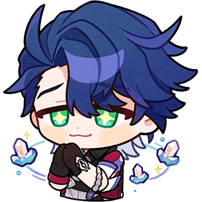

Welcome to Hoyo Knights' official website! | A fan-made & fan-run club!
We are a Gacha game based club here at UCF.
We are a realtively new club, being established this year, so we don't have too many members just yet.
Do you like Stories? Adventure? Characters? Characters that look and act so cool you may or may not spend your entire paycheck in order to get them as a playable character in your inventory?
Well, Look no further! Hoyo Knights is the club for you!
Our primary focus are on games from the Hoyoverse such as Genshin Impact, Honkai: Star Rail (our current president's favorite), and Zenless Zone Zero!
BUT-
Hoyoverse isn't our only focus. We Disscus, play, and collaborate on other gacha based games. We love them all!
Group Gaming Sessions | Group Discussions | Character Builds | Play Throughs | Watch Alongs | Social Events | and More!
Hang out with other students that enjoy playing gacha games! Play co-op or have challenges! Watch along to gacha related content or events! Teach or be taught how to build specific characters or teams in your favorite games! Join us outside of UCF for social events such as picnics, karaoke, lunch/dinner, and more!

Sampo Koski is a character from Honkai: Star Rail, owned by HoYoverse (COGNOSPHERE). No official affiliation or endorsement implied.
Any of this sound interesting to you? Yes? Then join our Discord Server and sign up on Knights Connect!
Discord